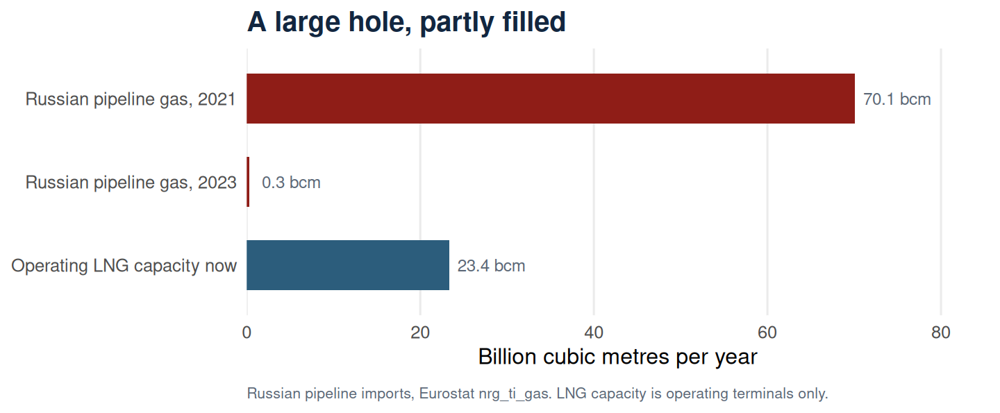
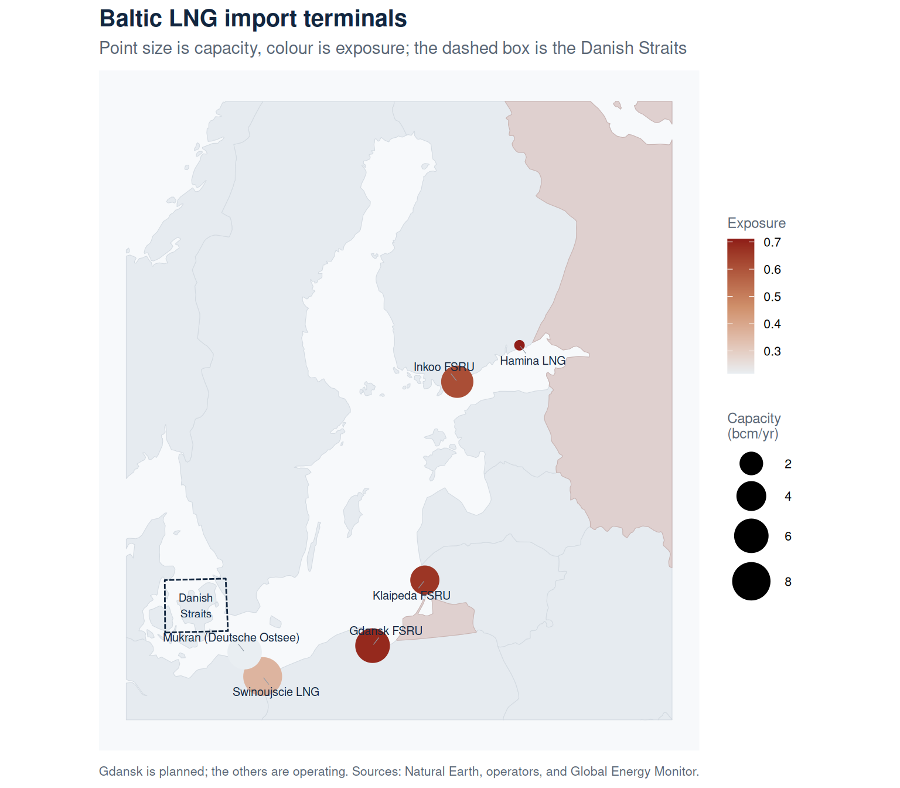
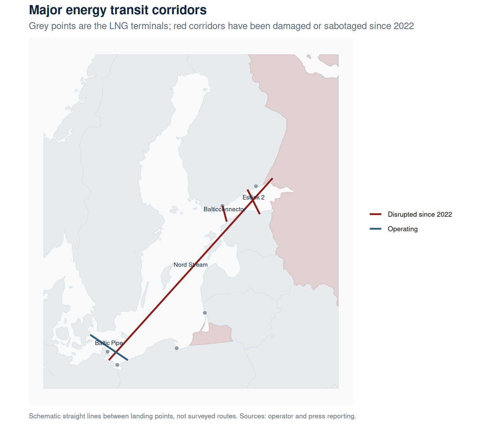
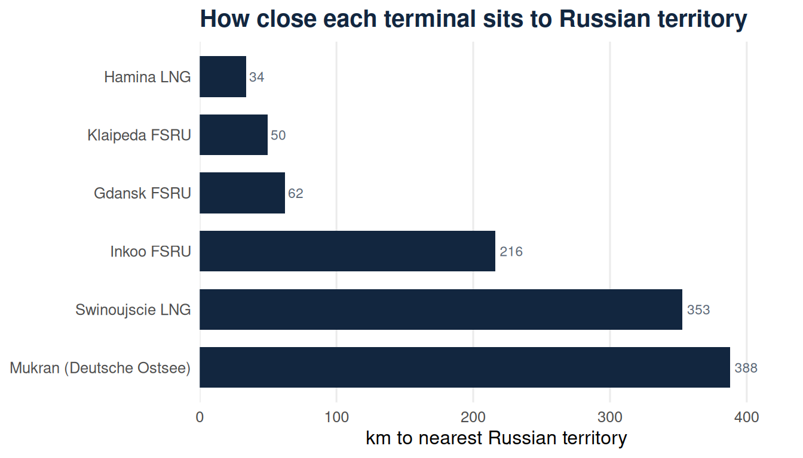
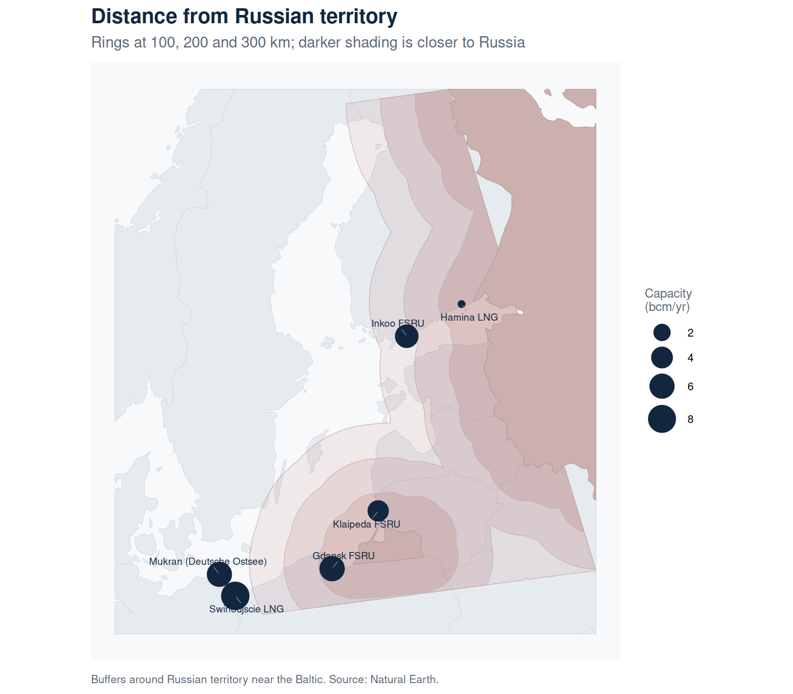
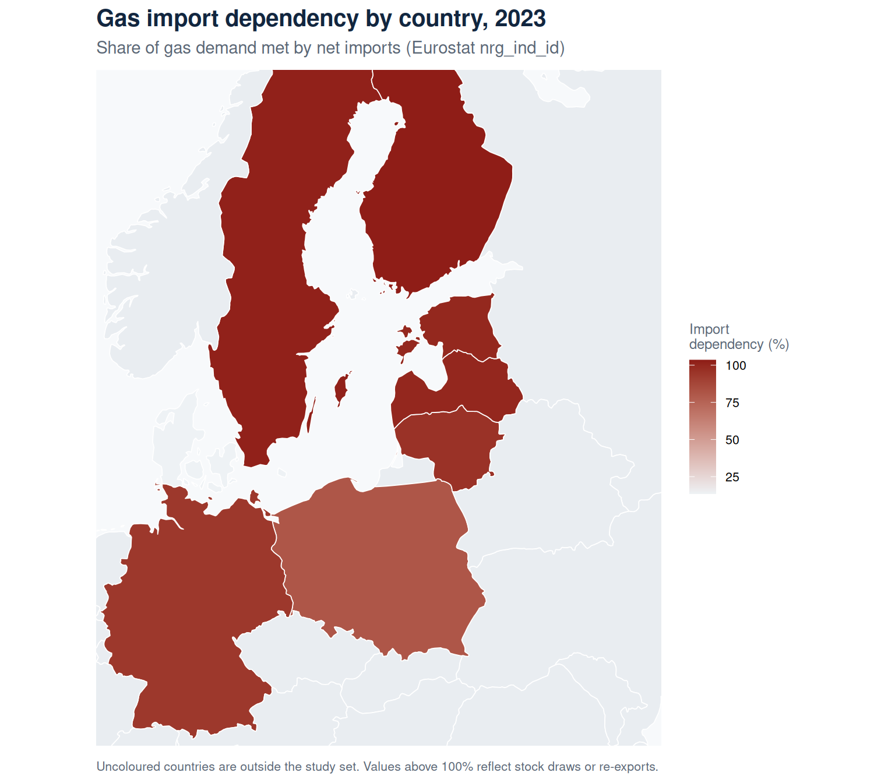
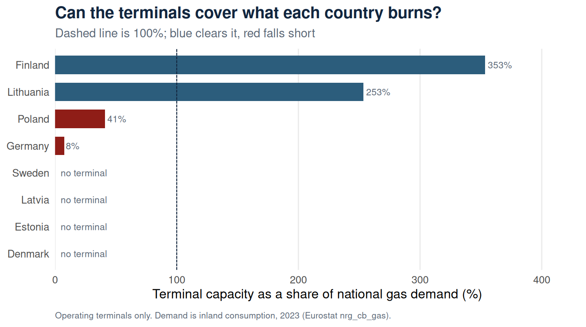
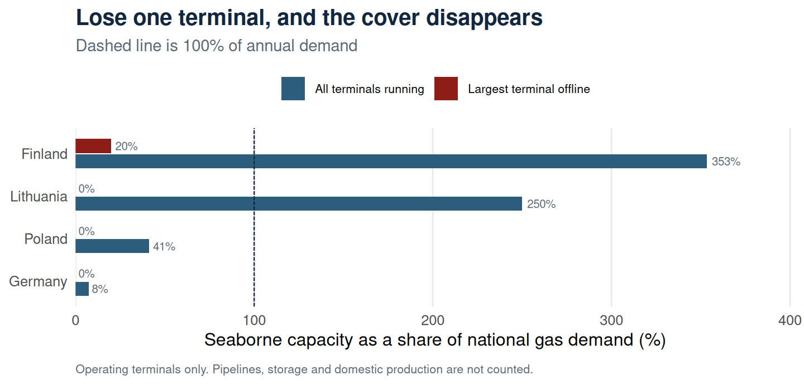

Analysis
Every map and figure on this page is built from the public data listed on the Data page, and all distances are reported in kilometres. Each chart has a “Show code” toggle if you want to see how it was made, but you do not need to read any code to follow the analysis.
The terminal capacities come from operator reporting and the Global Energy Monitor tracker, current to 2024 and 2025 (see the Data page). Capacities change, so read the rankings as a picture of exposure rather than precise figures.
What was replaced
Before looking at where the terminals sit, it is worth seeing the size of the hole they were built to fill. Russian pipeline gas into these eight countries has all but stopped, and the LNG capacity built since covers only part of what went.
In 2021 these countries took 70.1 bcm of gas from Russia by pipeline. By 2023 that was 0.3 bcm, essentially nothing, and only Finland and Sweden recorded any at all. Germany alone accounted for 55.4 bcm of the 2021 total and Poland 10.5 bcm.
The operating LNG terminals amount to 23.4 bcm a year, roughly a third of what stopped arriving. The gap did not close through terminals alone. It closed through lower demand, Norwegian pipeline gas, and imports arriving overland from the west, which is worth remembering before reading these terminals as the whole of the region’s answer.
Concentration
Where the import terminals sit, with each point sized by how much gas it can bring in. Russian territory is shaded for reference.

Transit corridors
The terminals are only part of the picture. They replaced, or now sit alongside, a network of subsea pipelines and cables, several of which have been damaged or sabotaged since 2022. The map shows the main corridors as schematic straight lines between their landing points.

Proximity
Distance from each terminal to the nearest Russian territory, meaning the mainland near the Gulf of Finland or the Kaliningrad exclave, with the share of total capacity sitting within a given band.
Only 17% of the region’s operating import capacity sits within 200 km of Russian territory. The two largest terminals, Świnoujście and Mukran, lie more than 350 km back, so the exposure concentrates in the smaller terminals closest to the border.

Proximity zones
The rings mark distance from Russian territory in 100 km steps. The terminals inside 100 km are the small ones, near Kaliningrad and at the eastern end of the Gulf of Finland. The largest capacity sits in the outer band, well back from the border.

| Band | Terminals | Capacity (bcm) |
|---|---|---|
| Under 100 km | 3 | 10.2 |
| 200 to 300 km | 1 | 5.0 |
| Over 300 km | 2 | 14.3 |
Dependence
Gas import dependency for each country (Eurostat nrg_ind_id, natural gas, 2023). The figure is the share of a country’s gas demand met by imports rather than its own production, so values above 100% reflect stock draws or re-exports.

Import capacity by country
Not every country has its own terminal. This rolls the operating terminals up by country, next to each country’s gas import dependency.
Estonia, Latvia and Sweden have no terminal of their own, yet almost all their gas is imported; they lean on neighbours through the Balticconnector and regional pipelines. Lithuania, Germany and Poland each run a single terminal, so that one asset carries the country’s seaborne supply. Denmark stands apart, with low dependency on the back of its North Sea production.
Is the capacity enough?
Capacity only means something next to demand. This compares each country’s operating terminal capacity with the gas it actually burned in 2023, so a bar at 100% means the terminals alone could cover a normal year’s consumption.

Across the eight countries the operating terminals could land 22% of the gas the region burns in a year. That regional figure hides the more interesting split. Finland and Lithuania built capacity well beyond their own consumption, so their terminals are not just national supply but a regional buffer that neighbours can draw on. Poland and Germany, with far larger demand, cover only part of it by sea and still lean on pipelines from the west and north.
Four countries show no terminal, but they are not in the same position. Estonia, Latvia and Sweden import all their gas through neighbours, so the empty bar is a dependency. Denmark’s empty bar is not: it produces its own gas from the North Sea and is the one country here that does not need a terminal.
Read alongside the exposure score, this sharpens the picture. The terminals sitting closest to Russian territory are the small ones, but two of them, Klaipėda and Inkoo, are precisely the assets carrying spare capacity for their neighbours. The most exposed sites are also the ones the region’s fallback depends on.
What if the biggest terminal goes down?
EU gas security rules use an idea called the N-1 standard: can a country still meet demand if its single largest piece of supply infrastructure fails? The test below borrows that logic and applies it to seaborne capacity alone, removing each country’s largest terminal and asking what the rest could still land.

The result is stark. Finland and Lithuania comfortably clear their own demand while everything is running, but each depends on one large terminal. Take Inkoo out and Finland is left with Hamina, a small-scale site covering about a fifth of demand. Take out Klaipėda, Świnoujście or Mukran and Lithuania, Poland and Germany have no seaborne capacity at all.
Two caveats matter here. The real N-1 standard counts every source of supply, including pipelines, storage and domestic production, so these countries are not failing the actual regulatory test. They have other ways to get gas, which is the point: lose a terminal and you fall back onto exactly the pipelines and interconnectors that have been damaged since 2022. And this compares against annual demand, while a failure in January would bite harder than the average suggests.
Exposure ranking
Click any column heading to re-sort the table.
Change the weights yourself
The weights are a choice, so rather than defend one set, here they are to move. Drag a slider or take one of the presets, and the ranking recomputes as you go. The weights are rescaled to sum to one, so only their balance matters.
Presets:
| Rank | Terminal | Exposure |
|---|
Weighting towards proximity lifts the terminals nearest Russian territory, Hamina, Klaipėda and Gdańsk. Weighting towards capacity lifts Świnoujście, the largest in the region. That the order moves at all is the point: the ranking is a function of the assumptions, and the assumptions are yours to set.
Interactive map
Toggle the layers in the top-right, hover a corridor or terminal for its name, and click a terminal for its figures.